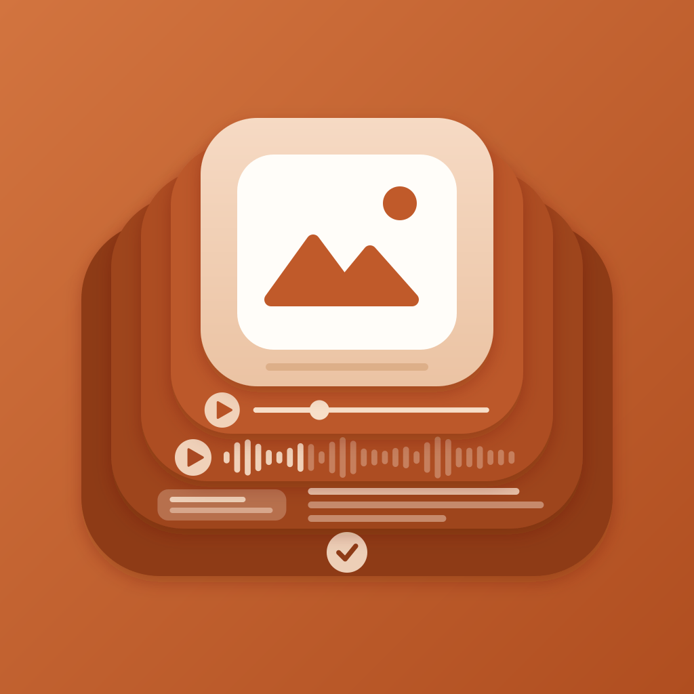

Three readings of the stacked-layer silhouette. The layers are the five entry kinds, and each one carries the motif that identifies it on its own Entry Detail screen.
Every layer keeps its own kind tint — sage, cream, lavender, peach — the way the entry screens do. Depth is carried by the shadow each layer drops on the one behind it.
The reference read: one colour, depth by tone, motifs as light watermarks. Quieter on a home screen, and the kinds are texture rather than statement.

Same five motifs, different silhouette — a hand of entries rather than a stack. Each card is legible down its outer edge, so the motif sits high.